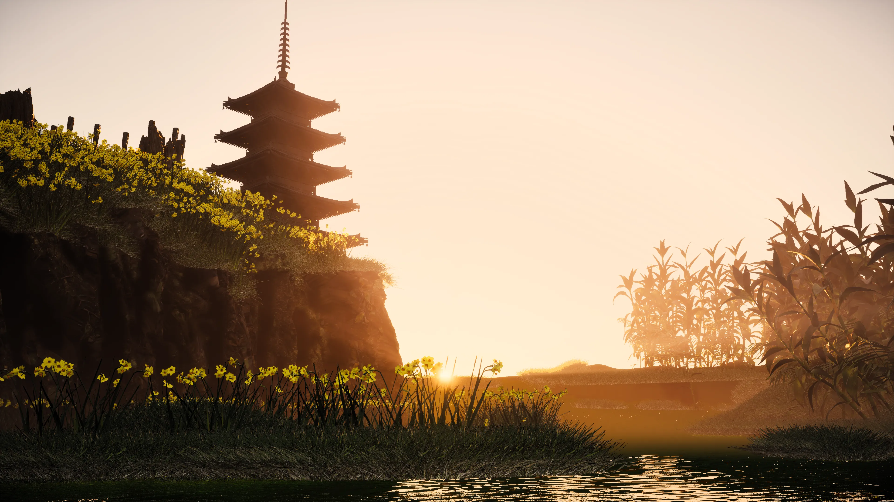
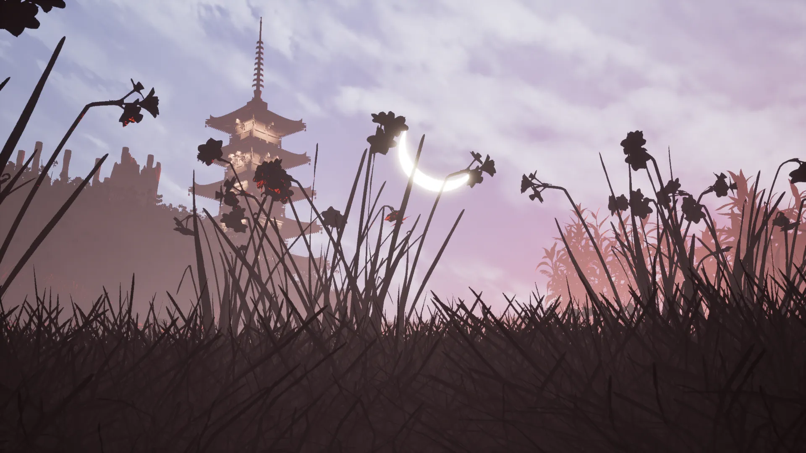
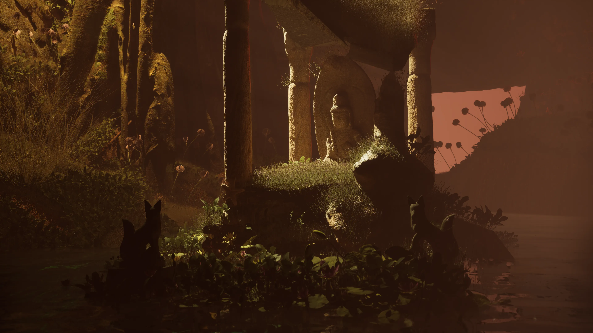
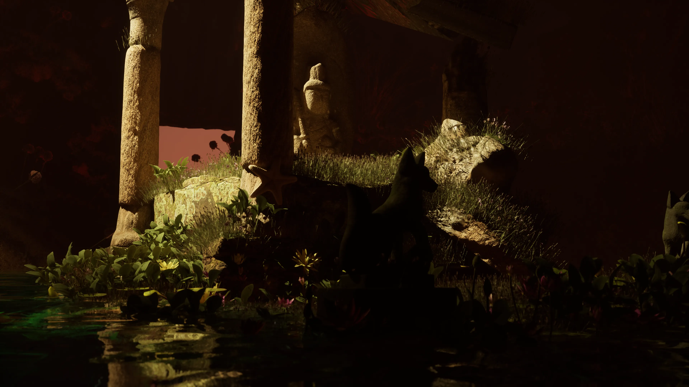
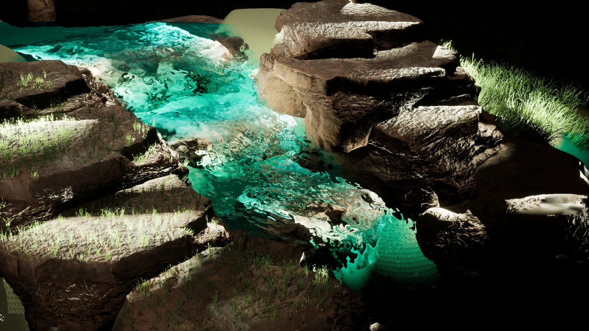
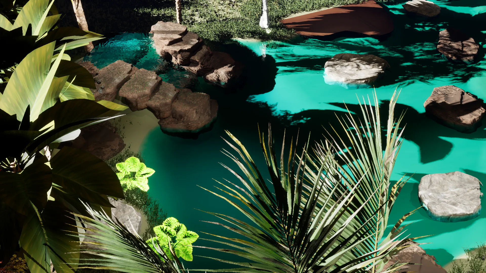
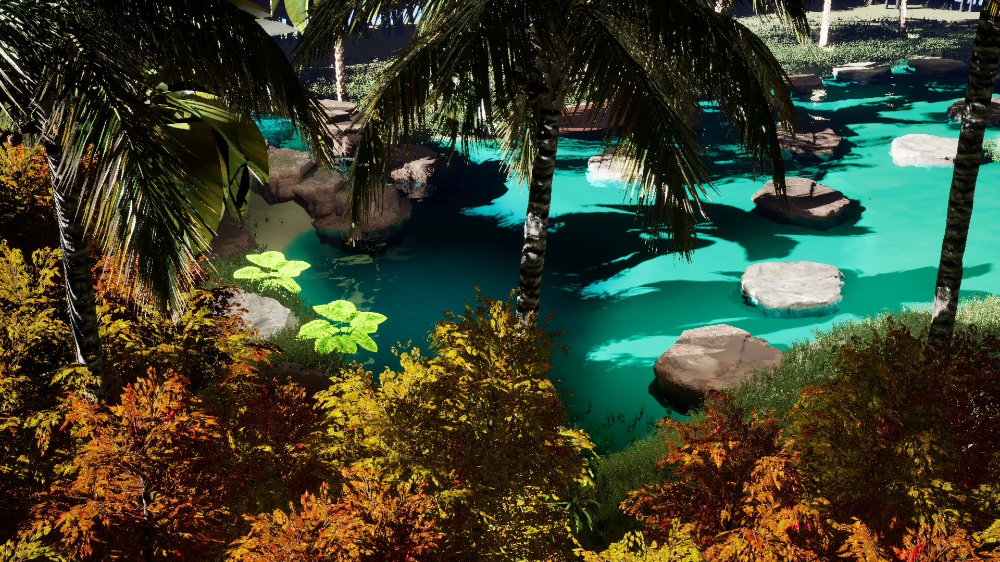
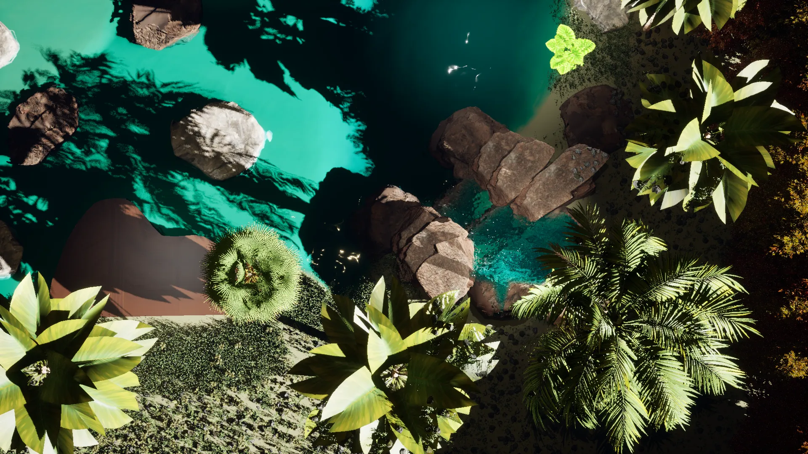

Built in Hyderabad.
A practice that learned light from late afternoons and color from old paper.
I build worlds by deciding where the light goes.
A practice that learned light from late afternoons and color from old paper.
Maya, ZBrush, Substance, Arnold, Unreal — and a refusal to render anything that doesn’t earn its frame.
Cracks where someone has put their hand a thousand times. Light that has somewhere to be by 4 PM.
Building toward an MA in Germany, Summer 2027 — open to commission, full-time, and academic exchange.
A pagoda at the hour before the world is awake. The sea hasn’t started speaking yet. Held in the palette of held breath.


Through The Classic Partnership Inc. (Toronto, 2025): Midea Canada and its sub-brands — Eureka, Pelonis, RAC, Z_Comfee — plus KD Displays, Home Depot Canada, GC Burger, Investohome Puerto Rico and Amaya Restaurant. Studio work with VS Design Studio. Independent freelance: AZ Coffee, LLT Overseas, nxtwave, Tamada Media, Lakshmi Bakers, Inertia Productions.
“The work is not in the rendering. The work is in deciding what deserves to be rendered — and at what hour of the day. Worlds are made of choices. Light, longest of all, is a choice.”
A small Buddhist shrine at the hour the candles take over. The foxes wait without expectation. The kind of place that knows you’ll be back.


A pond that knows the colors of every season it has held. The koi keep their own time. Light comes from inside the water, not above it.




Pick the size of the work, not the hours. Every tier runs concept through delivery — the difference lives in scope and depth, not pace.
A single environment, mood-driven. One moment, lit and held. For album art, key frames, cover stills.
A complete scene — props, lighting, multi-angle renders, the full atmosphere. For editorials, brand campaigns, visual development.
Concept-to-pipeline-to-final. Animation passes, look-dev, the full hand-off package. For studios, agencies, films, product launches.
I’m a 3D environment artist trained in the Indian and international agency pipeline — Maya, ZBrush, Substance, Arnold, Unreal — with the soul of someone who grew up watching anime frames longer than their parents would’ve liked. The two halves don’t argue with each other. They argue with the work, and the work answers.
I think of an environment as a kept thing. A working life. Cracks where someone has put their hand a thousand times. Foxes that have stopped expecting visitors but still keep watch.
Available for full-time, project work, and German MA collaborations — Summer 2027 intake.
# scene: sumanth.ass — Arnold Scene Source
artist
role
based
education
stack
soul
target
availability